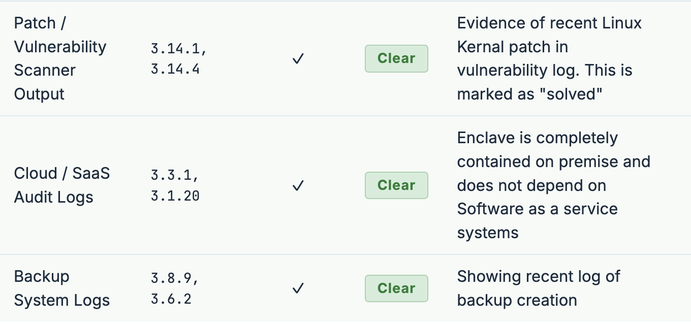

CCP Expertise & NIST SP 800-171
- Certified CMMC Professional (CCP): An ISACA credentialed professional translates CMMC expectations into practical, testable safeguards for research systems, technical teams, and principal investigators.
- NIST SP 800-171 foundation: The program organizes security around protecting CUI through the 110 requirements and documented implementation of access control, audit logging, incident response, configuration management, and more.
- Evidence before assessment: System security plans, policies, procedures, screenshots, log records, and interview-ready narratives are maintained as operational artifacts.
- Shared responsibility: The Research Security Office sets the control interpretation and evidence standard; enclave administrators operate and demonstrate the safeguards.
One Research Security Office, Three separate enclave teams
On-Prem Engineering|Connect Engineering Labs to CUI
VPR Secure Research Enclave|Cloud-based Secure Research
On-Premises HPC Cluster|Made for large datasets
Established Operating Model
4 yrs
Operating the College of Engineering secure enclave
110
NIST SP 800-171 requirements guiding CUI protection
14
Control families considered in the NIST SP 800-171 program
1
Security model reused across people, process, and technology
24/7
Need for availability, accountability, and incident readiness
PI + IT
Partnership that turns requirements into research-ready services
What Cross-Enclave CCP Work Looks Like
- College of Engineering Enclave: our on-premises environment has supported controlled research for the last four years, providing an operational baseline for secure collaboration with CUI.
- Operational controls: centralized identity and access management, segmented infrastructure, endpoint protections, firewall controls, vulnerability management, audit logging, and monitored administrative access work together as a daily service.
- Repeatable research onboarding: researchers and technical staff receive clear expectations for data handling, approved access paths, incident reporting, and evidence retention.
- Living compliance: risk decisions, plans of action and milestones, annual reviews, and system security plan updates allow the enclave to evolve without losing its security narrative.
By the Numbers
3
CUI enclaves supported concurrently
3
SSPs reviewed and contributed to
320
assessment objectives addressed
19
weekly log-review meetings
Weekly Multi-Enclave Log Review
- Administrators and Research Security review enclave logs and scenarios are designed for potential audit questions.
- Each scenario is correlated to the relevant NIST SP 800-171 Audit and Accountability expectation.

Secure Research Enclave in AWS
- Campus-scale service: The new AWS enclave is being built to give researchers across campus a secure and accessible environment.
- Data types in scope: PII, PHI, HIPAA-regulated information, California Department of Public Health data, CUI, and government data requiring a FISMA Moderate implementation aligned to NIST SP 800-53 Rev. 5.
- Designed for controlled collaboration: Cloud-native identity, least privilege, encrypted storage and transit, logging, configuration baselines, continuous monitoring, and documented authorization boundaries are planned from the start.
- Research enablement: A shared enclave reduces the security burden on individual labs while preserving clear project ownership, data-use restrictions, and traceability.
- Control conversion: Mature on-premises practices are not copied blindly to AWS, they are translated into cloud-native controls and evidence that remain understandable to researchers and assessors.
Lessons & Takeaway
- CCP training provides the control language; the live challenge is coordinating ownership among separate IT teams and architectures.
- In-house capacity matters when an institution has multiple enclaves, recurring consultant costs, and a need for someone fluent with both PIs and system administrators.
- Research onboarding: five site visits helped researchers and labs understand CUI-specific enclave expectations.
CCP Investment
CCP training$1,899
ISACA CCP exam$760
Certification application$200
Total investment$2,859
55 hours to certification-ready: 30 hours guided study, 10 hours independent exam study, and 15 hours of CMMC immersion through internal mock auditing.